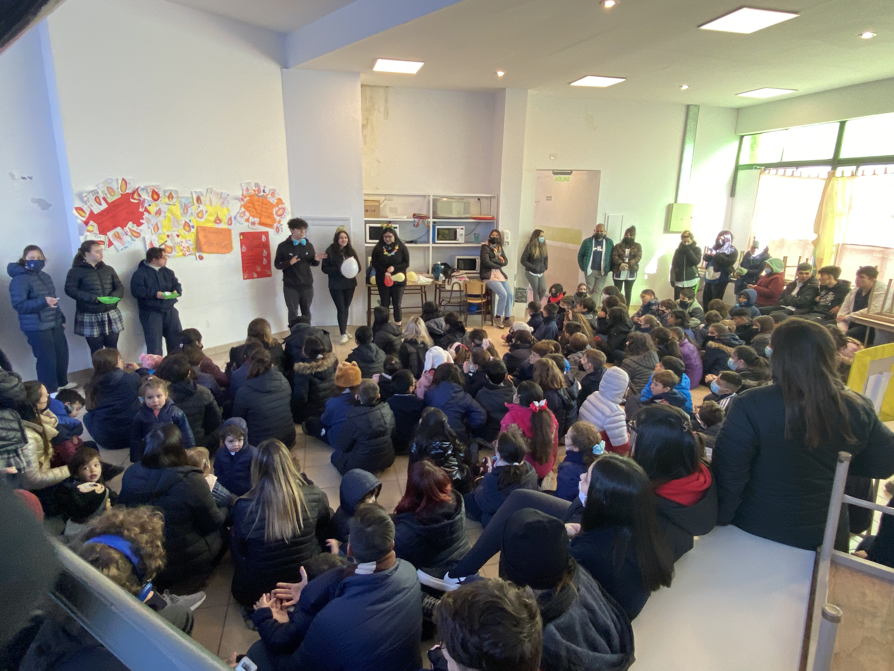
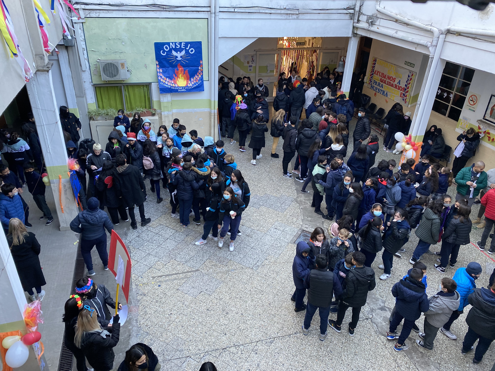
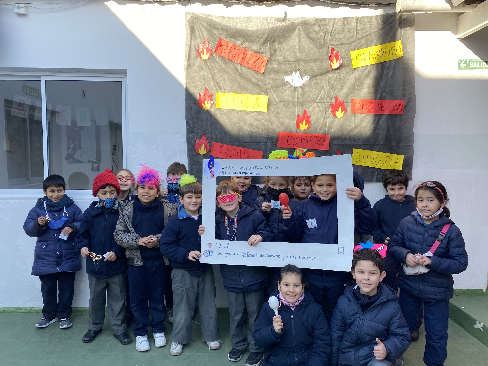
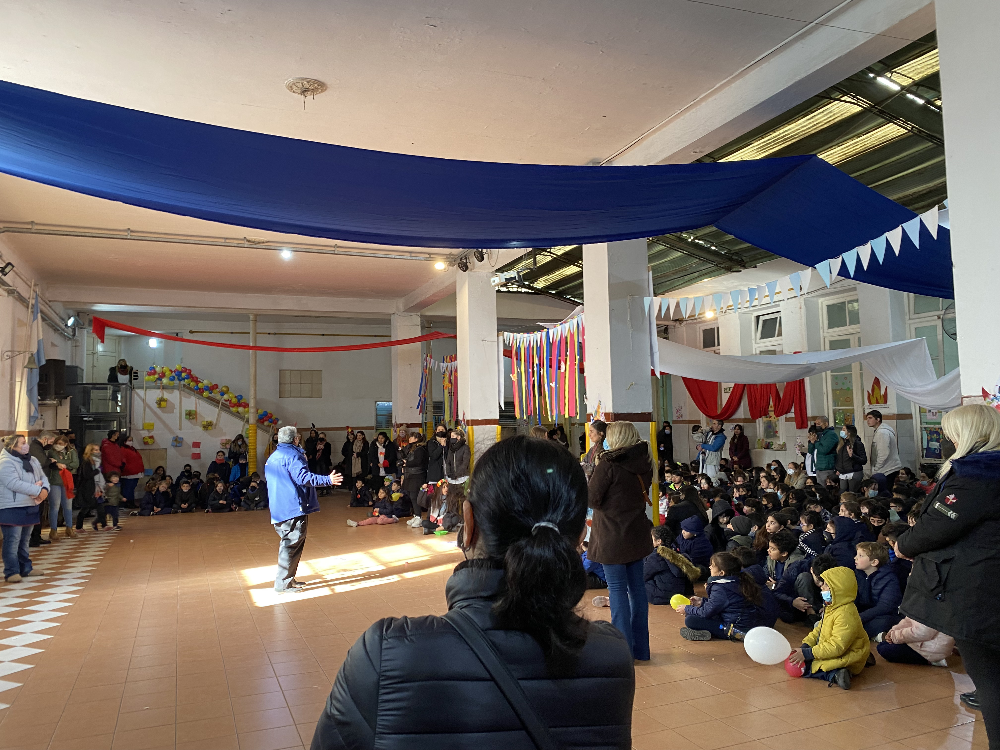

Pentecostés
Una de las fiestas más típicas que se hace en el colegio es Pentecostés pues son nuestras Fiestas Patronales. Esta fiesta consiste en festejar la llegada del Espíritu Santo, seguida de varias actividades creativas que propone el equipo directivo respecto a los dones del Espíritu Santo.
Testimonio de estaciones
Por Eluney Acosta de 5°B Mi puesto fue como acompañante del Grupo 2, se nos asignó la tarea de guiar al grupo en
dirección a los sectores que corresponden en sus respectivos horarios, en primer lugar nos
dirigimos al sector de Tik Tok, donde realizamos un baile con la canción “Recibirán”.
Luego fuimos a la Capilla y allí vimos un video acerca de lo que había sucedido el día de
Pentecostés, seguimos hacia el sector del comedor, hablamos sobre “el entendimiento”,
terminando sacamos una foto de todos los alumnos, por último lugar nos dirigimos a la
terraza, allí tuvimos la oportunidad de quien lo deseara pudiera ayudar en la pintura del mural, luego concluimos el día en el patio cubierto del colegio, donde nos
repartieron un desayuno junto a unas palabras de agradecimiento por parte de algunos docentes.
Estaba en el grupo del entendimiento, su tarea fue sacarle fotos a los cuatro grupos.
Primero mis compañeros explicaban el don, les hacían preguntas y jugaban un pequeño
juego, después íbamos llamando a los distintos cursos, salitas y grados para poder sacarles
una foto en grupo. Los acomodamos, le dábamos algo para que se pongan y luego se
dirigieran a las otras estaciones.
Camila estaba en la estación de Ciencia, en ella, ambos quintos junto a profesoras de arte, estábamos trabajando
en la terraza, ordenando los botes de pintura.
Y a medida que iban pasando los guías con distintos cursos, ayudamos a los más chicos a pintar. A
los más grandes les indicamos qué hacer, en cambio a los más chiquitos, le colocamos un
poco de pintura sus pulgares para que dejen su huella en el mural junto al resto.
Sophia estaba en la estación de Temor de Dios y varios alumnos de quinto nos unimos para enseñarle a
los chicos de inicial, primaria y secundaria, una coreografía de TikTok a la canción
“Recibirán”. Durante esa mañana nos divertimos bailando y cantando todos juntos mientras
grabamos a los chicos desde un marco hecho por los alumnos de primaria que imitaba la
página inicial de esa aplicación. Estar en esa estación fue super divertido y creo que
logramos enseñarle a los nenes sobre el temor de Dios de una manera divertida.
Sebastián estuvo en la estación realizando una actividad referente al don de la Piedad. Para explicarlo se
mostró un video que mostraba cómo se inició el Pentecostés y haciéndoles cantar a los
niños una canción relacionada con el amor de Dios hacia el hombre. Finalmente los chicos
junto a las profes encargadas de esta estación cantaron una canción acerca del Espíritu Santo.



